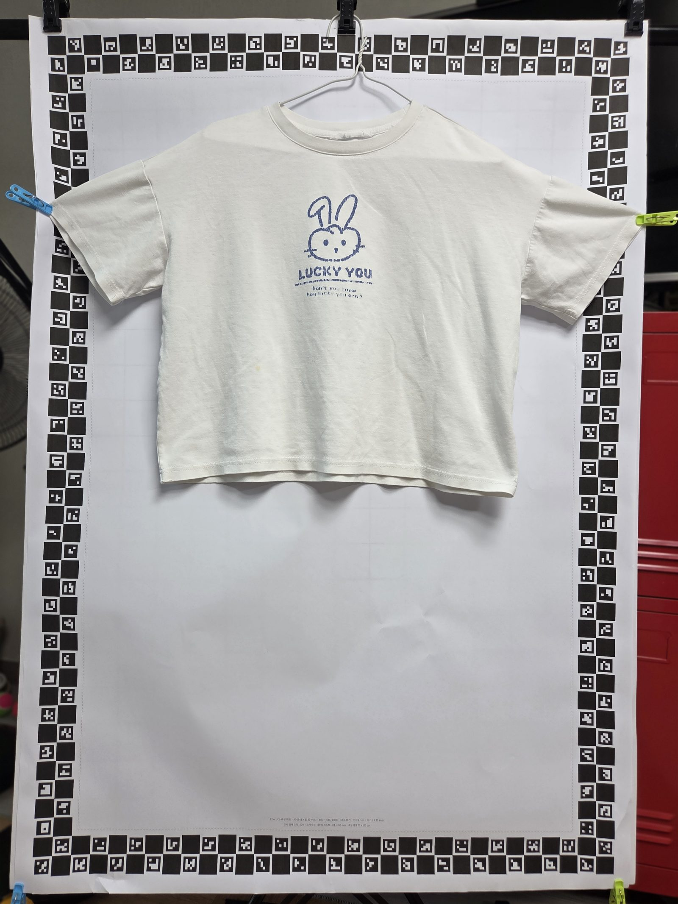
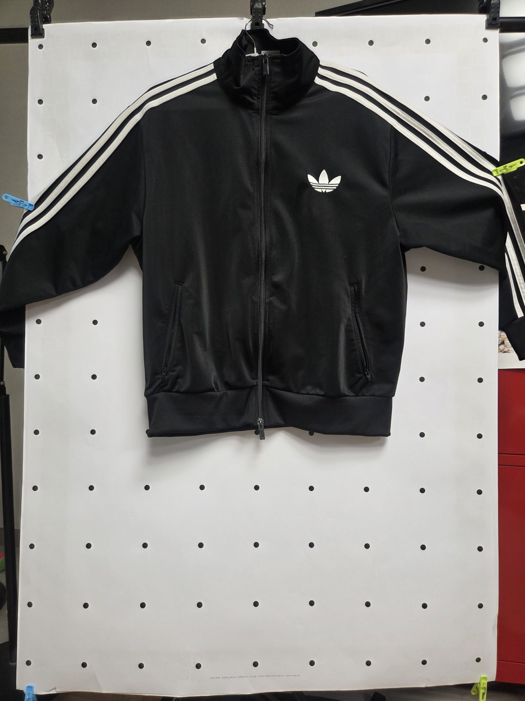
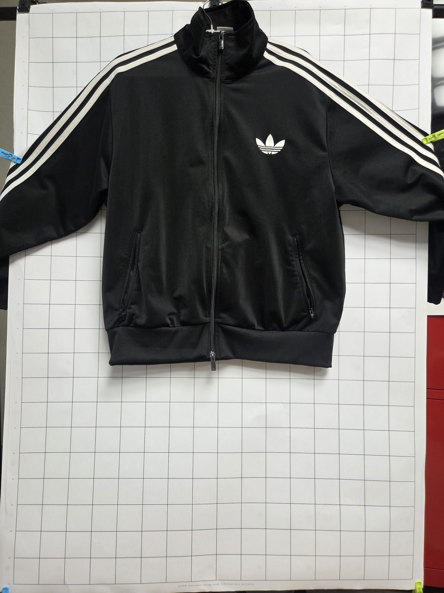
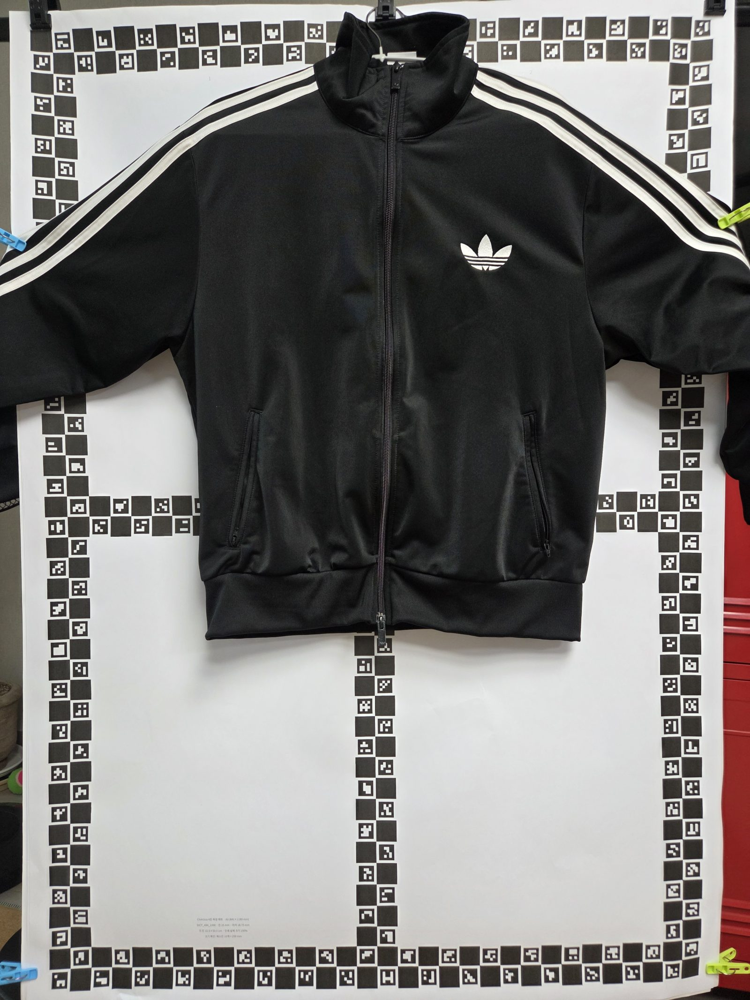

옷과 기준판을 함께 찍어요

옷을 기준판 가운데에 놓고 가능한 한 펴요. 기준판의 네 모서리와 표식이 사진에 다 나오게 해요.
FITSHARE · 쉬운 실측 안내
컴퓨터는 사진 속 기준판을 자처럼 이용해 사진을 반듯하게 고친 다음, 옷으로 보이는 픽셀을 모으고, 옷의 종류에 맞는 위치에서 너비와 기장을 계산해요.
큰 순서부터 알아봐요
사진을 찍기 전에 옷을 사람이 먼저 펴 놓아요. 컴퓨터가 하는 “사진 평탄화”는 옷을 다림질하는 일이 아니라, 비스듬한 사진을 종이를 정면에서 본 것처럼 고치는 일이에요.

옷을 기준판 가운데에 놓고 가능한 한 펴요. 기준판의 네 모서리와 표식이 사진에 다 나오게 해요.
점·격자·ChArUco 표식을 찾아 실제 기준판 모양에 맞춰요. 비스듬한 사각형을 반듯한 A0 판처럼 변환해요.
색과 이어진 모양을 살펴 옷 픽셀을 흰색, 배경을 검은색으로 표시해요. 이 흑백 지도를 마스크라고 해요.
옷 종류에 따라 미리 정한 높이 비율에서 너비를 재고, 옷의 위아래 끝을 기준으로 기장을 구해요.
A0 기준판의 알려진 길이로 픽셀을 cm로 환산해요. 결과 사진에 칠해진 옷 영역과 선이 맞는지 눈으로 보고, 이상하면 다시 찍거나 숫자를 고쳐야 해요.
배경은 커다란 자예요
네 기준판은 무늬와 찾는 방법이 달라요. 사진에서 찾은 점·선·표식의 위치를 기준판의 알려진 좌표와 짝지어 보정합니다. 아래 사진은 실제 실험에 사용한 기준판입니다.

회색조와 임계값 처리로 어두운 점을 분리한 뒤 cv2.connectedComponentsWithStats로 이어진 픽셀을 점 덩어리로 묶어요. 점 크기·위치 조건으로 후보를 고르고 외곽 모양을 기준 좌표에 대응합니다.
_component_mask, _detect_dot_mat, cv2.getPerspectiveTransform
cv2.Canny로 선의 가장자리를 강조하고 cv2.HoughLinesP로 긴 선분을 찾아요. 방향이 비슷한 선을 가로·세로로 묶고 cv2.fitLine과 _line_intersection으로 교차점을 계산합니다.
_detect_cross_mat, _cluster_grid_lines, cv2.Canny, cv2.HoughLinesP노란 테두리: 사진의 오른쪽 위 가장자리에서 찾은 ID 31
cv2.aruco.ArucoDetector.detectMarkers가 표식의 네 모서리와 ID를 찾아요. ID는 QR 번호가 아니라 DICT_4X4_1000 사전에서 무늬를 구분하는 ArUco 표식 번호예요.
data/charuco_marker_maps.json에서 이 판의 ID에 해당하는 네 모서리 기준 좌표를 찾는 열쇠예요.cv2.findHomography와 RANSAC이 잘못 짝지어진 표식을 걸러요.
노란 테두리: 사진의 왼쪽 아래 가장자리에서 찾은 ID 243
검출기는 M3와 같지만 격자형 판의 ID 배치와 기준 좌표표는 별개예요. M4 전용 좌표표에서 ID마다 기준판의 네 모서리를 찾아 사진 좌표와 연결합니다.
ArucoDetector.detectMarkers, cv2.findHomography, RANSACM1·M2는 점이나 선에서 대응점을 계산하고, M3·M4는 검출한 ID로 기준 위치를 조회해요. 앞의 두 방식은 대응점으로 cv2.getPerspectiveTransform 또는 cv2.getAffineTransform을 구하고, ChArUco는 여러 표식 대응점으로 cv2.findHomography를 구합니다. 마지막에는 cv2.warpPerspective 또는 cv2.warpAffine으로 사진을 변환해요.
원본 사진은 4000×3000픽셀입니다. 표식을 찾기 전 긴 변이 최대 1000픽셀이 되도록 줄이고, 찾은 좌표를 이용해 A0 기준판을 600×848픽셀 캔버스에 맞춰요. 실제 크기 84.1×118.9cm에 맞춘 공통 좌표판이라 사진마다 픽셀과 cm의 관계를 같은 기준으로 계산할 수 있습니다.
옷 마스크 계산에서는 보정 사진을 다시 긴 변 최대 600픽셀로 줄여요. 따라서 보정 출력 기준은 약 0.140cm(1.4mm)/px이고, 마스크 분석 영상은 약 424×600픽셀로 약 0.198cm(2.0mm)/px입니다. 출력 이미지 해상도와 옷 경계를 분석하는 해상도는 같지 않아요.
입력과 마스크 크기 제한은 처리할 픽셀 수를 줄여 계산량과 메모리 사용을 낮추는 효과가 있습니다. 이는 코드의 크기 제한을 바탕으로 한 해석입니다. 축소 과정에서 작은 경계 정보가 사라질 수도 있으므로, 숫자를 크게 하면 항상 정확도가 좋아진다고 할 수 없어요.
현재 설정은 20/20장 성공, 너비·기장 평균 절대 오차(MAE)는 2.9cm / 4.1cm였어요. 입력·보정 출력·마스크 크기를 모두 두 배로 한 설정은 20/20장 성공했지만 오차가 5.7cm / 7.4cm로 커졌습니다. 입력 축소 한도만 1000에서 2000픽셀로 올리고 출력·마스크 크기는 그대로 둔 설정은 너비 오차 2.7cm, 기장 오차 5.7cm였어요.
그래서 현재 해상도를 유지합니다. 이 20장 비교에서는 전체적으로 더 정확해지지 않았어요. 측정 오차에는 표식 검출뿐 아니라 옷 마스크와 측정선 선택도 영향을 줍니다. 이 결과는 현재 실험 사진의 결과이며 모든 옷과 촬영 조건을 보장하지 않아요.
중요: 아무 바닥 무늬나 자가 되는 것은 아니에요. 무늬의 간격이나 표식 위치, 기준판의 실제 크기를 미리 알아야 해요. 표식이 가려지거나 판이 사진 밖으로 잘리면 바로잡기 어렵고, 옷이 구겨져 있으면 사진만 반듯하게 고쳐도 옷 주름은 펴지지 않아요.
코드를 조금만 들여다봐요
아래는 실제로 사용하는 함수와 계산을 이해하기 쉽게 짧게 보여 준 예시예요. 초록색으로 시작하는 줄은 초등학생을 위한 설명 주석이에요.
서버의 OpenCV 코드가 표식 좌표와 실제 판 좌표를 맞춥니다.
corners, ids, _ = detector.detectMarkers(gray)
# 사진에서 모양과 번호가 있는 표식을 찾아요.
if ids is None:
raise ValueError("표식을 못 찾았어요")
matrix, inliers = cv2.findHomography(
source_points, target_points, cv2.RANSAC, 3.5
)
# 사진 속 점을 종이 위의 자리로 옮기는 계산표를 만들어요.
flattened = cv2.warpPerspective(
image, matrix, (OUTPUT_WIDTH, OUTPUT_HEIGHT)
)
# 계산표를 따라 사진을 반듯한 A0 모양으로 바꿔요.detector.detectMarkersgraycorners / idsdetector / _detector는 표식을 찾는 도구이고, _는 이번 계산에서 쓰지 않는 결과를 담아 둔 이름이에요.source_points / target_pointscv2.findHomographyinlierscv2.RANSAC / 3.5cv2.warpPerspectiveflattened
warpPerspective는 사진의 원근을 바꾸는 함수예요.
사진이 비스듬하면 가까운 쪽과 먼 쪽의 크기 차이도 함께 보정할 수 있어요.
옷 안쪽일 것 같은 곳과 배경일 것 같은 곳을 알려 준 다음 색과 경계를 살펴요.
cv2.grabCut(
working, labels, None,
background_model, foreground_model,
3, cv2.GC_INIT_WITH_MASK
)
# 컴퓨터에게 "이쪽은 옷일 것 같아" 하는 힌트를 줘요.
binary = (labels == cv2.GC_FGD) | (labels == cv2.GC_PR_FGD)
# 옷이라고 생각한 칸은 참, 배경은 거짓으로 표시해요.
binary = cv2.morphologyEx(binary, cv2.MORPH_CLOSE, kernel)
# 옷 마스크에 난 작은 구멍을 메워요.workinglabelscv2.GC_FGD / cv2.GC_PR_FGDbackground_model / foreground_modelcv2.grabCutbinarycv2.morphologyExkernelCIELAB
이 방식은 사진을 보고 색과 가까운 픽셀을 나누는 OpenCV 처리예요.
옷 안쪽 색은 CIELAB 색 공간에서 비교해 밝기와 색 차이를 살펴요.
YOLO나 SAM 같은 학습된 인공지능이 현재 기본 실측을 대신하는 것은 아니에요.
마스크에서 가로 폭을 계산하고, 종류별 비율로 너비 선 위치를 정합니다.
base_threshold = maximum_span * profile.get("lengthSpanRatio", .55)
active_rows = np.flatnonzero(base_spans >= base_threshold)
top = int(active_rows[0])
bottom = int(active_rows[-1])
# 옷의 폭이 충분한 가로줄만 골라 위와 아래 끝을 정해요.
target_y = int(width_top + width_height * profile["widthRatio"])
# width_top에서 옷 높이의 widthRatio만큼 내려온 곳이에요.
width_pixels = float(np.median(valid_spans))
# 그 높이 주변의 폭 중간값을 사용해 작은 흔들림을 줄여요.base_spansmaximum_spanprofilelengthSpanRatio / widthRatiobase_thresholdactive_rowswidth_top / width_bottomwidth_heightwidth_bottom - width_top으로 구한 범위의 높이예요. 이 높이에 비율을 곱해요.target_ywidth_top + width_height × widthRatio로 정한 너비선의 세로 위치예요. 봉제선을 직접 찾은 위치는 아니에요.top / bottomnp.flatnonzero / intnp.median / floatvalid_spans / width_pixels기준은 옷으로 고른 영역의 위쪽부터 아래쪽까지 높이예요. 높이가 100px이면 40%는 위에서 40px 내려온 곳이에요.
여기서 profile은 옷 종류별 규칙표예요.
width_top과 width_bottom 사이의 높이를 계산한 뒤,
그 높이에 widthRatio를 곱해 너비선을 놓아요.
이 방법은 단순한 위치 추정이며 “겨드랑이 선”을 눈으로 찾는 방법은 아닙니다.
A0 종이의 실제 가로·세로 크기를 사진 픽셀에 적용합니다.
cm_per_pixel_x = A0_WIDTH_CM / OUTPUT_WIDTH
cm_per_pixel_y = A0_HEIGHT_CM / OUTPUT_HEIGHT
# 종이의 1픽셀이 실제로 몇 cm인지 방향별로 구해요.
width_cm = width_pixels * cm_per_pixel_x
length_cm = garment_height * cm_per_pixel_y
# 사진 속 픽셀 길이에 cm 값을 곱해 실제 길이를 구해요.A0_WIDTH_CM / A0_HEIGHT_CMOUTPUT_WIDTH / OUTPUT_HEIGHTcm_per_pixel_x / cm_per_pixel_ywidth_pixels / garment_heightwidth_cm / length_cm실제 코드에서는 분석 이미지 크기가 달라질 때를 고려해 픽셀 비율을 한 번 더 반영해요. 가로와 세로의 픽셀 크기가 같지 않을 수 있어서 두 방향을 따로 계산합니다.
마지막으로 기준을 확인해요
상의는 겨드랑이 아래처럼 정해 둔 기준에서 너비를 재는 경우가 많아요. 판매처마다 측정 위치가 다를 수 있어 안내를 확인해야 해요.
앞의 그림처럼 마스크 높이의 비율로 너비선을 골라요. 겨드랑이나 봉제점을 찾은 결과가 아니므로, 오버레이를 보고 원하는 위치인지 확인해 주세요.
측정값의 뜻: 너비는 옷을 바닥에 펼쳤을 때의 좌우 길이이고, 기장은 옷 영역에서 찾은 위·아래 끝 사이 길이예요. 둘레나 사람이 입었을 때의 몸 치수는 아닙니다.
잰 치수를 호수와 비교해요
치수를 입력하면 옷 종류별 참고표와 비교해 국내에서 쓰는 키 호수 하나를 바로 골라요. 호수 숫자는 아이의 키를 가리키는 이름이고, 옷의 길이와 같지 않아요. 자동 선택 뒤에는 호수를 직접 바꿀 수 있어요.
한국산업표준에는 KS K 0052 「유아복의 치수」, KS K 9402 「남자 아동복의 치수」, KS K 9403 「여자 아동복의 치수」 기준이 있어요. 한국표준정보망은 세 표준 모두 2025년 9월 개정된 것으로 안내해요. 적용 연령과 옷 종류가 표준마다 달라요.
| 자료 | 알려 주는 내용 | 알려 주지 않는 내용 |
|---|---|---|
| KS K 0052 | 영아부터 취학 전 유아 의류 치수 기준 | 초등학생 옷까지 포함하는 단일 호수표 |
| KS K 9402·9403 | 각각 만 7~12세 남자·여자 아동복 치수 기준 | 사진으로 잰 옷의 펼친 너비·기장으로 브랜드 호수를 판정하는 공식 |
옷 종류를 고르고 사진에서 확인한 너비·기장을 입력하면 내장 참고 치수표에서 너비와 기장이 가장 가까운 90~160호 하나를 바로 선택해요. 선택된 호수는 바로 아래 상자에서 직접 바꿀 수 있어요.
내장 너비·기장 값은 FitShare가 정한 임시 참고값이에요. 공식 KS 변환표나 실제 상품 치수 통계가 아니며, 여러 브랜드의 옷을 재어 검증한 값도 아니에요. KS 호수는 아이 키 기준이라 옷 실측만으로 아이에게 맞는 크기를 보장할 수 없어요. 브랜드와 디자인에 따라 다르니 상품을 고를 때 판매처의 안내와 아이의 키도 확인해 주세요.
자동 호수는 참고용이에요. 자동으로 선택한 값은 옷 실측과 내장 참고표의 근접값이에요. KS의 공식 변환 결과나 아이에게 잘 맞는다는 보장은 아니에요. 판매처 안내와 아이 키를 함께 확인하고 필요하면 호수를 직접 바꿔 주세요.
현재 한계와 다음에 필요한 절차
실험 숫자를 바르게 읽어요
진행 기록에는 20장 사진을 방법마다 100번씩 다시 분석한 실험이 있어요. 같은 사진을 여러 번 분석하는 것은 결과가 일정한지 확인하는 데 도움이 되지만, 서로 다른 옷 2,000벌을 시험했다는 뜻은 아니에요.
그 시험 사진에서 항상 원근 보정을 한 방법의 평균 절대 오차는 너비 2.94cm, 기장 4.13cm였어요. 이 숫자는 그 사진 모음의 결과이지, 모든 옷에서 보장하는 정확도가 아니에요.
사람이 마지막으로 확인해요. 색칠된 옷 영역이 옷 밖으로 새지 않았는지, 가슴·허리 선이 원하는 자리에 있는지, 기장 시작과 끝이 맞는지 확인하고 저장하세요.